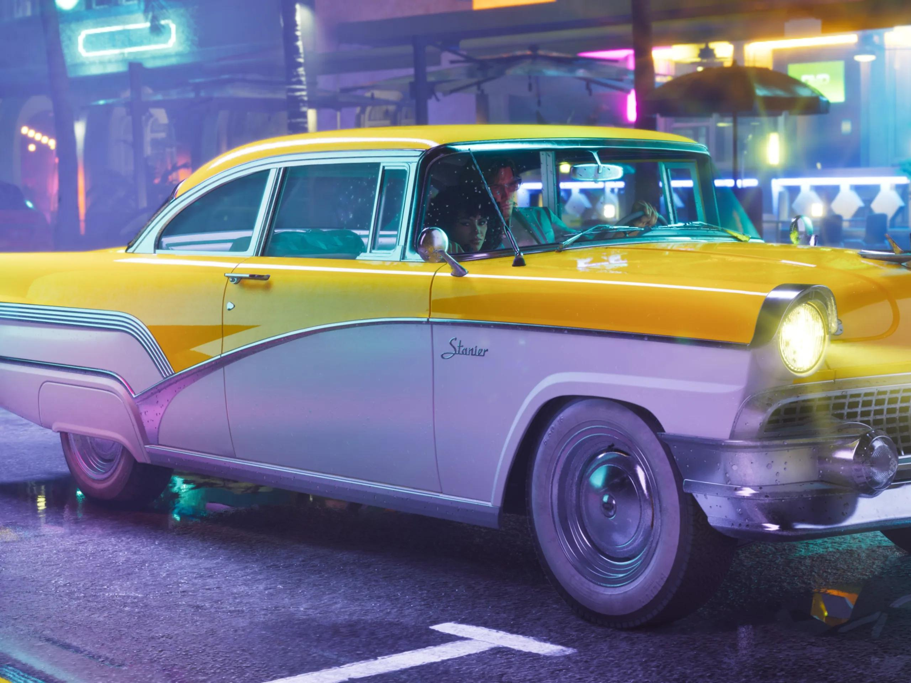

Vice City / 02
Vehicles
Explore the GTA 6 vehicle list, from classic American muscle to sleek sports cars spotted in official footage and community research.

Showing 34 Vehicles
Names and descriptions are research-based and may change before release.